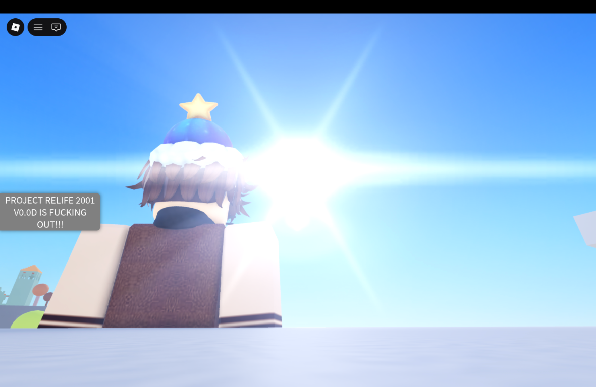
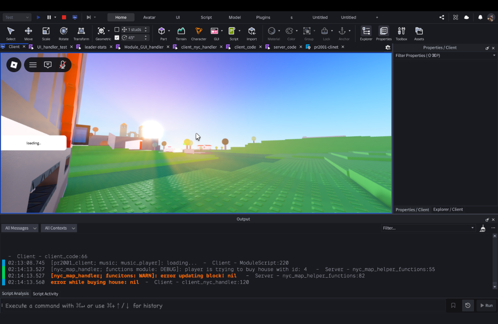
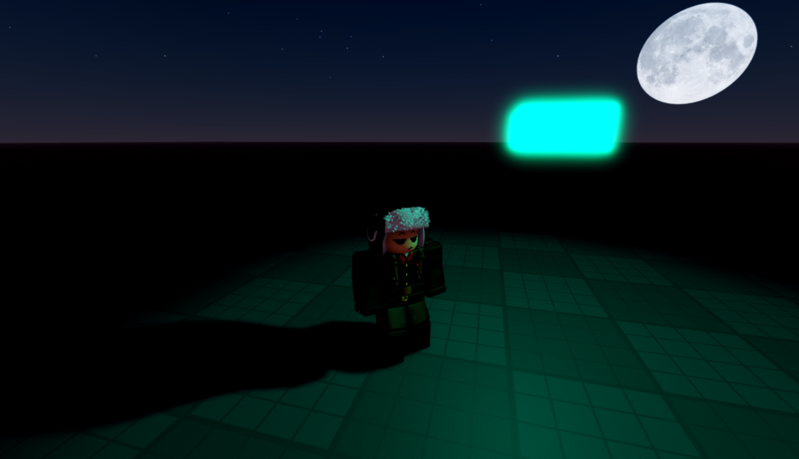

2000s setting
A story-rich environment inspired by the atmosphere and culture of early 2000s city life.
Client V0.0c · music
Project
Project ReLife 2001 is an immersive story and roleplay experience set in 2000s New York City. It is a full recode and architectural overhaul of Life in 2001 v0.3, built to eliminate legacy issues, improve performance, and create a cleaner, more scalable game foundation.
Visuals
Snapshots from the game's world, development process, and atmosphere.



Build direction
A story-rich environment inspired by the atmosphere and culture of early 2000s city life.
Clean gameplay systems, immersive lighting, sound design, and improved performance.
Active development focused on architecture, storytelling, and gameplay reliability.
Project context
ReLife 2001 is a full recode and architectural overhaul of the earlier Life in 2001 v0.3 project. The rebuild is intended to remove legacy issues rather than simply patch the old foundation.
The project combines story, roleplay, atmosphere, and reliable gameplay systems so future features can be added without compromising performance or maintainability.
Bright daytime environments, city-scale spaces, night scenes, and music work together to create a distinct early-2000s setting.